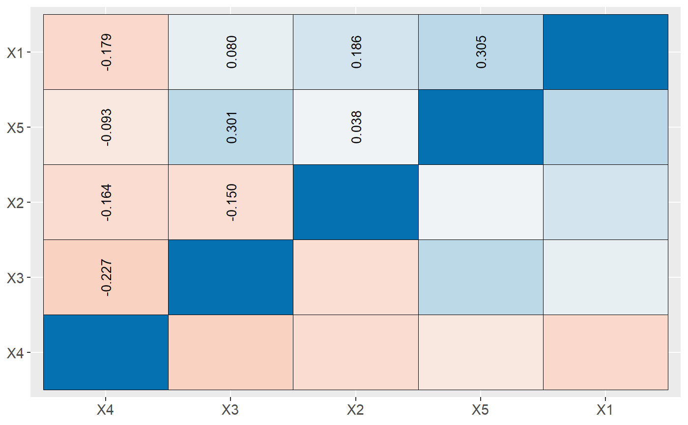
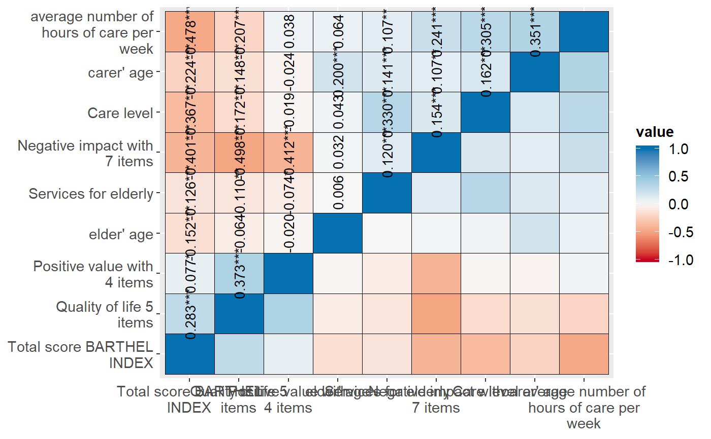

Plot correlation matrix
sjp.corr.RdPlot correlation matrix as ellipses or tiles.
sjp.corr(data, title = NULL, axis.labels = NULL, sort.corr = TRUE, decimals = 3, na.deletion = c("listwise", "pairwise"), corr.method = c("pearson", "spearman", "kendall"), geom.colors = "RdBu", wrap.title = 50, wrap.labels = 20, show.legend = FALSE, legend.title = NULL, show.values = TRUE, show.p = TRUE, p.numeric = FALSE)
Arguments
| data | Matrix with correlation coefficients as returned by the
|
|---|---|
| title | character vector, used as plot title. Depending on plot type and function,
will be set automatically. If |
| axis.labels | character vector with labels used as axis labels. Optional argument, since in most cases, axis labels are set automatically. |
| sort.corr | Logical, if |
| decimals | Indicates how many decimal values after comma are printed when
the values labels are shown. Default is 3. Only applies when
|
| na.deletion | Indicates how missing values are treated. May be either
|
| corr.method | Indicates the correlation computation method. May be one of
|
| geom.colors | user defined color for geoms. See 'Details' in |
| wrap.title | numeric, determines how many chars of the plot title are displayed in one line and when a line break is inserted. |
| wrap.labels | numeric, determines how many chars of the value, variable or axis labels are displayed in one line and when a line break is inserted. |
| show.legend | logical, if |
| legend.title | character vector, used as title for the plot legend. |
| show.values | Logical, whether values should be plotted or not. |
| show.p | Logical, adds significance levels to values, or value and variable labels. |
| p.numeric | Logical, if |
Value
(Insisibily) returns the ggplot-object with the complete plot (plot) as well as the data frame that
was used for setting up the ggplot-object (df) and the original correlation matrix
(corr.matrix).
Details
Required argument is either a data.frame or a matrix with correlation coefficients
as returned by the cor-function. In case of ellipses, the
ellipses size indicates the strength of the correlation. Furthermore,
blue and red colors indicate positive or negative correlations, where
stronger correlations are darker.
Note
If data is a matrix with correlation coefficients as returned by
the cor-function, p-values can't be computed.
Thus, show.p and p.numeric
only have an effect if data is a data.frame.
See also
Examples
# create data frame with 5 random variables mydf <- data.frame(cbind(runif(10), runif(10), runif(10), runif(10), runif(10))) # plot correlation matrix sjp.corr(mydf)#>#> Warning: Removed 15 rows containing missing values (geom_text).# ------------------------------- # Data from the EUROFAMCARE sample dataset # ------------------------------- library(sjlabelled) data(efc) # retrieve variable and value labels varlabs <- get_label(efc) # create data frame vars.index <- c(1, 4, 15, 19, 20, 21, 22, 24, 25) mydf <- data.frame(efc[, vars.index]) colnames(mydf) <- varlabs[vars.index] # show legend sjp.corr(mydf, show.legend = TRUE)#>#> Warning: Removed 45 rows containing missing values (geom_text).# ------------------------------- # auto-detection of labels # ------------------------------- sjp.corr(efc[, vars.index])#>#> Warning: Removed 45 rows containing missing values (geom_text).